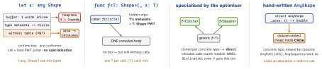

design · folio
In one line: Swift turns runtime patterns into compile-time ones: a phantom type/tagged
ID makes a wrong argument a compile error, an enum makes an illegal state unrepresentable, a
generic constraint is a Strategy chosen at build time — and type erasure is the price
of going back to runtime. Order of preference: some/generics > any P<X> >
a hand-written AnyX.
Download PDF Print view LaTeX source


Type erasure — three tools Hand box: store the conformer’s methods as closures
→ a concrete type you can extend and conform (AnyPublisher,
AnySequence). any P<X> (primary associated types, 5.7): a built-in box.
some P: not erasure — hidden from the reader, known to the compiler.
eraseToAnyPublisher() hides Publishers.Map<…>; AnyView also erases
structural identity (worse diffing, lost @State); AnyHashable = mixed
keys in one Set. An any P passed to <T: P> is opened (SE-0352).
protocol Loader<Output> { associatedtype Output
func load() async throws -> Output }
struct AnyLoader<Output>: Loader { // hand-written box
private let _load: () async throws -> Output
init<L: Loader>(_ base: L) where L.Output == Output {
_load = base.load } // captures base
func load() async throws -> Output { try await _load() } }
let b: any Loader<User> = RemoteUserLoader() // built-in (5.7)Phantom types · tagged IDs · newtype A phantom parameter is never stored; it only
stops mixing values with the same representation: tagged IDs (pointfree’s
Tagged<Tag, Raw>), type-state (a Request<Draft> has no send()).
Newtype: struct Email with a failable init validates once —
“parse, don’t validate”. Zero runtime cost.
struct ID<Entity>: Hashable, Sendable { let raw: UUID }
struct User { let id: ID<User> }
struct Order { let id: ID<Order>; let buyer: ID<User> }
func user(_ id: ID<User>) -> User? { nil }
// user(order.id) error: ID<Order> is not ID<User>
enum Draft {}; enum Signed {} // uninhabited tags
struct Request<State> { var body: Data }
extension Request where State == Draft {
func signed() -> Request<Signed> { .init(body: body) } }
extension Request where State == Signed { func send() async {} }Protocol witnesses — a struct of closures One struct whose properties are closures
replaces protocol + conformers; each “conformance” is a static value (.live,
.mock). + override one endpoint in a test, derive variants by transforming
values, no any/associated-type friction. - no default methods, no Self;
closures must be @Sendable to share. pointfree’s swift-dependencies clients are
built this way.
struct TimeClient: Sendable {
var now: @Sendable () -> Date
var sleep: @Sendable (Duration) async throws -> Void }
extension TimeClient { static let live = TimeClient(
now: { Date() }, sleep: { try await Task.sleep(for: $0) }) }
var t = TimeClient.live; t.now = { .distantPast } // one endpointBuilder: result builder vs fluent API @resultBuilder (SE-0289): the compiler rewrites
the closure’s statements into buildExpression/buildBlock/buildOptional/
buildEither/buildArray calls — a compile-checked DSL (@ViewBuilder).
Fluent: each call returns a modified copy of a struct —
Req().header(k, v).timeout(5); no build(), never half-built.
@resultBuilder enum PathBuilder {
static func buildExpression(_ s: String) -> [String] { [s] }
static func buildBlock(_ c: [String]...) -> [String] {
c.flatMap { $0 } }
static func buildOptional(_ c: [String]?) -> [String] { c ?? [] } }
func path(@PathBuilder _ make: () -> [String]) -> String {
make().joined(separator: "/") }
let p = path { "users"; if isAdmin { "admin" } } // users/adminClosures as Strategy · enums as state machines A one-method Strategy is a function:
sorted(by:), a price closure. Use a protocol once there are several related
operations, state, or it needs a name. State machine: each case carries only the data valid
in that state (no isLoading + error? + items combinations); transitions
= one switch on (state, event).
enum Load { case idle, loading, loaded([Item]), failed(String) }
enum Event { case start, success([Item]), failure(String) }
extension Load { mutating func send(_ e: Event) {
switch (self, e) {
case (.idle, .start), (.failed, .start): self = .loading
case (.loading, .success(let v)): self = .loaded(v)
case (.loading, .failure(let m)): self = .failed(m)
default: break } } } // illegal transition: assert/log hereDefault implementations — the subclass trap Extensions give defaults and mixins. If a
superclass conforms using the default, the witness is bound for Base;
Sub’s method (no override needed!) is never reached through the protocol.
Fix: implement it in Base; Sub must then write override.
protocol Greeter { func hi() -> String }
extension Greeter { func hi() -> String { "default" } }
class Base: Greeter {} // witness = the extension
class Sub: Base { func hi() -> String { "sub" } } // no override
let g: any Greeter = Sub()
g.hi() // "default" (but Sub().hi() is "sub")Generic constraint = compile-time Strategy The strategy is a type fixed at the use site: specialised and inlined, no stored existential, no runtime swap.
protocol Backoff { static func delay(_ n: Int) -> Duration }
enum Exponential: Backoff { static func delay(_ n: Int)
-> Duration { .milliseconds(100 << n) } }
struct Retrier<B: Backoff> {
func wait(attempt n: Int) async throws {
try await Task.sleep(for: B.delay(n)) } } // static call
let r = Retrier<Exponential>() // fixed at build timeTraps
AnyVieweverywhere: lost identity → worse diffing, reset@State.- “
someis type erasure” — no: the compiler still knows the type. - Bare
Pstill meansany P;anyis required for associated-type/Selfprotocols, everywhere withExistentialAny.
Remember
Make wrong code not compile: phantom → wrong ID · enum → wrong state · newtype → unvalidated input. some > any > AnyX.